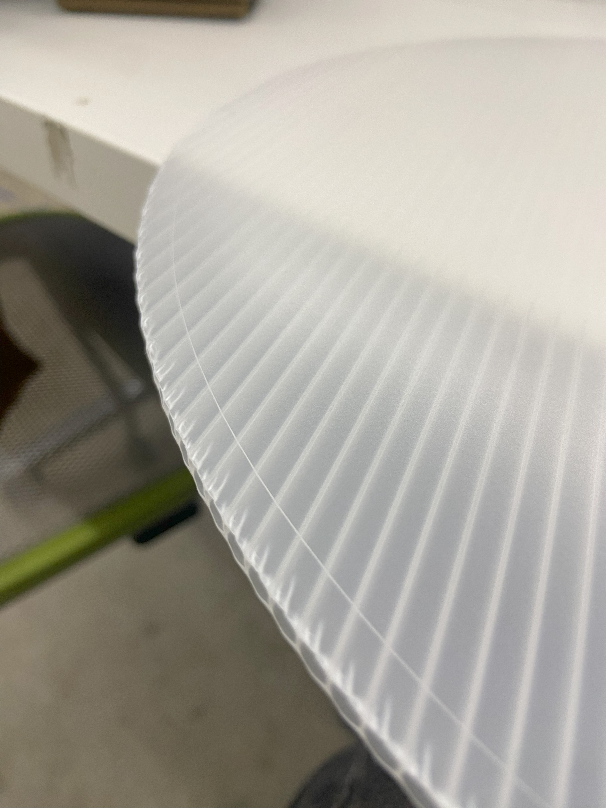

<div class="textcontainer">
<p class="margin"> </p>
<h4>Electronically Controlled 3D Printed Zoetrope</h4>
<p class="margin"></p>
<p class="margin"></p>
<div class="flexrow">
<video controls autoplay
src="./PS70 Final.mp4" alt="final project video" style="width:100%; max-width:700px;">
</div>
<div class="flexrow">
<a download href='./final.zip'>Download all my files for this project here</a>
</div>
<p class="margin"></p>
<p class="margin"></p>
<h4>Brainstorming</h4>
<p class="margin"></p>
I had been planning this project since the early weeks of this class. I included some references and early discussion
of the idea on my [Week 1](https://bkazer.github.io/PS70/01_intro/index.html) page, and created a crude prototype of a similar device, the praxinoscope for the [Week 3](https://bkazer.github.io/PS70/03_fabrication/index.html) assignment.
<p class="margin"></p>
When it came time for production, I settled on the idea of 3D printed scultpures/frames for the animation. The turntable would be driven with a stepper motor, the lighting would be LED strips, and a microcontroller would modulate the system
<p class="margin"></p>
<p class="margin"></p>
<h4>Prototyping</h4>
<p class="margin"></p>
Before getting too deep into the details, I needed to test out basic mechanisms such as getting a plate to spin with the stepper motor. This is something I explored with my underwhelming MVP in [Week 7](https://bkazer.github.io/PS70/07_outputs/index.html). With this early prototype I learned that load-bearing lazy susan hardware was really helpful for keeping the turntable flat and supported.
<p class="margin"></p>
I hand measured 16 equally spaced sections and 3D printed little discs, placing them incrementally closer to the center of the turntable to do a preliminary test of spinning physical objects.
<p class="margin"></p>
<div class="flexrow">
</div>
<p class="caption">My MVP test of a turntable with minimum viable 3D printed animation sequence</p>
Moving out of MVP week I needed to:
<ul>
<li>Develop a stronger and more robust structure for the machine.</li>
<li>Have greated control over the spin speed.</li>
<li>Figure out how to integrate LED strips.</li>
<li>Decide on final 3D printed animation.</li>
<li>So many more things, I was overwhelmed...</li>
</ul>
<h4>Animation Sequence with Grasshopper</h4>
<p class="margin"></p>
I had experimented last semester with a Grasshopper (Rhino plugin) script that converts a 3D mesh into discrete voxels, with varying density. For my zoetrope animation, I thought it would be cool to digitally simulate carving a sculpture by using this script to reveal a voxelized figure from a cube. I found a free download of a 3D model of the statue of david and decided to animate Michaelangelo's masterpiece. The grasshopper script essentially forms a bounding box around the mesh, uses each edge of the mesh to create a box or voxel, and then populates the bounding box with these voxels based on a slider that controls the density. I placed a "modesty voxel" over David's midsection to be appropriate for all ages.
<p class="margin"></p>
<div class="flexrow">
<img src="david rated G.png" alt="David as a mesh" style="width:100%; max-width:600px;">
</div>
<div class="flexrow">
</div>
<p class="caption">G rated David mesh, and the grasshopper script used to voxelize him</p>
<p class="margin"></p>
I wanted to increase the size and animation length from what I had in the MVP so I used the voxel resolution slider to generate 24 increments of voxelized davids, starting with 1 (cube) and ending with 50 (realtively high res david). These 24 frames actually include 12 frames but duplicated, so I could create an endless loop of cube to david and back again. The last frame is the original mesh with modesty box, no voxels. 24 Frames was also decided in order to correlate with common camera frame rates. I planned on filming my zoetrope at 24 FPS to capture the animation, more on this later.
<p class="margin"></p>
<div class="flexrow">
<img src="david sequence.png" alt="david being voxelized" style="width:100%; max-width:600px;">
</div>
<p class="caption">24 frames of voxelization, from cube to figure</p>
<p class="margin"></p>
Next was printing. My first test on the Prusa was abismal in quality so Kassia suggested the resin printer. This required downloading a separate specific AnyCubic slicer. Since the resin printer works by UV curing bitmapped layers (amazing) the print time really only depends on the Z-height of the geometry, with X and Y making little difference. I was able to fit all 24 frames on the print bed and the print time was only ~5 hours with pretty amazing results.
<p class="margin"></p>
<div class="flexrow">
<img src="davids slicer.png" alt="davids in the slicer" style="width:100%; max-width:300px;">
</div>
<p class="caption">David slicing and printing</p>
After printing, make sure to:
<ul>
<li>Soak prints in 2 baths of isopropyl alcohol to remove excess resin.</li>
<li>Soak prints in hot water (you should be able to leave your finger in for 5-10 seconds, not longer)
This softens the supports that can then be removed effortlessly.</li>
<li>Place prints in UV cure box to fully harden.</li>
<li>Number your frames with sharpie on the bottom so you don't lose track!</li>
</ul>
<p class="margin"></p>
<div class="flexrow">
<img src="isoprop.png" alt="alcohol bath" style="width:100%; max-width:200px;">
</div>
<p class="caption">Processing resin prints</p>
<p class="margin"></p>
<p class="margin"></p>
<h4>Assembly</h4>
<p class="margin"></p>
Now for building the machine. A bill of materials for the final zoetrope hardware assembly:
<ul>
<li>1/4" Acrylic sheet (for the spin plate)</li>
<li>1/8" Acrylic sheet (for the baseplate, top panel and reinforcements)</li>
<li>1/8" transparent corrugated plastic sheet for the baseplate and skylight. The baseplate is the
exact same shape cut from 1/8" acrylic and corruplast, layered together. Acryclic for structure, corruplast
for aesthetics.</li>
<li>1/8" white corrugated plastic sheet for the top panel</li>
<li>M3 threaded rod (support columns)</li>
<li>M3 washers, spacers and standoffs</li>
<li>M3 locknuts for the feet</li>
<li>M3 screws (for fastending baseplate to motor, and the lazy susan to baseplate and spin plate)</li>
<li>4" load bearing [lazy susan](https://www.rockler.com/low-profile-lazy-susans?country=US&sid=V91074&promo=shopping&utm_source=google&utm_medium=cpc&utm_term=&utm_content=pla&utm_campaign=PL&lsft=adlpxid:pla;;;c;9002004;placeholder;28969;pla;local;34&gad_source=1&gclid=CjwKCAjwi_exBhA8EiwA_kU1MrjjMnldVv_2jjahgk5KLl0wrKFdA-y9L4k4-Zlf5FBO4Wb1ehztzhoC6QcQAvD_BwE)</li>
<li>Nema 17 stepper motor</li>
<li>Neopixel LED strips</li>
<li>3D printed motor coupler</li>
<li>Vinyl sticker to hide lazy susan hardware (forgot that transparent acrylic is transparent everywhere</li>
<li>Hot glue for securing prints to spin plate (though there is also a square tab on the bottom of the prints that sits in a square cutout in the spin plate</li>
</ul>
<p class="margin"></p>
<div class="flexrow">
<img src="Assembly.png" alt="Assembly diagram" style="width:100%; max-width:800px;">
</div>
<p class="caption">Assembly diagram for the structure</p>
The acrylic was laser cut, the sticker was cut on the roland vinyl cutter. The only fabrication done outside the lab was cutting the corrugated plastic. This cannot be laser cut so I used the Zund cutter (essentially a lasercutter with a knife) at the GSD to do this. I also etched a reference circle in the skylight to know the boundary for the LED strip placement so that the skylight could still have a clean lip to sit flush on the top panel.
<p class="margin"></p>
Some snapshots from the fabrication process:
<p class="margin"></p>
<div class="flexrow">
<img src="2.png" style="width:100%; max-width:150px;">
</div>
<p class="margin"></p>
<div class="flexrow">

</div>
<p class="margin"></p>
<div class="flexrow">
<img src="10.jpeg" style="width:100%; max-width:150px;">
</div>
<p class="caption">Assembling. Make sure to lightly sand bottom of prints and ~1/8" border around spin plate cutouts so hot glue will adhere</p>
<h4>Electronics</h4>
In addition to the stepper motor and LED strips, I used the following electronics to control the zoetrope:
<ul>
<li>Xiao ESP32C3 for the stepper motor</li>
<li>A4988 Stepper motor driver</li>
<li>Arduino Uno for the LED's</li>
<li>Button for LED on/off</li>
<li>Potentiometer for LED RGB control</li>
</ul>
Circuit diagram for Xiao (using slightly different ESP 32 for the diagram thats available on Wokwi) and stepper motor:
<p class="margin"></p>
<div class="flexrow">
</div>
Circuit diagram for Uno:
<p class="margin"></p>
<div class="flexrow">
<img src="Uno.png" alt="Uno circuit" style="width:100%; max-width:500px;">
</div>
<p class="margin"></p>
I made initial attempts during this project to control both the stepper motor and the LED strips on a single microcontroller. The plan was to have the LED's strobe at the same frame rate as the figures were spun to simulate a camera shutter, and make the illusion visible to the naked eye. I learned the hard way that this was far too much information for a single microcontroller to handle, and exploded 3 esp/xiao's in the process.
<p class="margin"></p>
So I opted for 2 microcontrollers. Problem is that it is nearly impossible to sync strobing on one microcontroller with spinning on the other, so I decided to just have the LED's serve as mood lighting, with RGB values controlled by a potentiometer and an off button.
<p class="margin"></p>
I also made this little enclosure for all the electronics and controls out of 1/8" acrylic that I sanded to get a frosted look.
<p class="margin"></p>
<div class="flexrow">
<img src="box.JPG" alt="controller box" style="width:100%; max-width:400px;">
</div>
<h4>Calibration</h4>
This part was tricky. I thought by simply having 24 frames in my animation, I could spin the table 1 revolution per second, record with my camera at 24 FPS, and everything would work perfectly. But because of the friction from the hardware and material components, this was not the case. There was also the issue of light and shutter angle on the camera which I had to figure out. After countless tests I figured out that a max speed of 620 with AccelStepper and 1 microstep pin active was the proper speed for 24 FPS, and 1200 for 30 FPS. I also needed to set the camera shutter angle to 1/1000, and manually adjust the ISO & focus. I shot all footage with a panasonic lumix gx8, but this could be done with any camera as long as shutter angle and FPS are controllable. The demo video at the top of this page has the best footage.
<p class="margin"></p>
Here are some more fun photos of the final product.
<p class="margin"></p>
<div class="flexrow">
<img src="f1.JPG" style="width:100%; max-width:200px;">
<img src="f2.JPG" style="width:100%; max-width:200px;">
<img src="f3.JPG" style="width:100%; max-width:200px;">
</div>
<p class="margin"></p>
<div class="flexrow">
<img src="f4.JPG" style="width:100%; max-width:200px;">
<img src="f5.JPG" style="width:100%; max-width:200px;">
<img src="f6.JPG" style="width:100%; max-width:200px;">
</div>
<p class="margin"></p>
<div class="flexrow">
<img src="f7.JPG" style="width:100%; max-width:200px;">
<img src="f8.JPG" style="width:100%; max-width:200px;">
<img src="f9.JPG" style="width:100%; max-width:200px;">
</div>
<p class="margin"></p>
<div class="flexrow">
<img src="f10.JPG" style="width:100%; max-width:200px;">
<img src="f11.JPG" style="width:100%; max-width:200px;">
<img src="f12.JPG" style="width:100%; max-width:200px;">
</div>
</div>